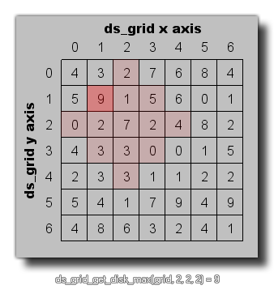

ds_grid_get_disk_max(index, xm, ym, r);
| Argument | Description |
|---|---|
| index | The index of the grid. |
| xm | The x position of the disk center in the grid. |
| ym | The y position of the disk center in the grid. |
| r | The radius of the disk in the grid. |
Returns: Real or String
This function can be used to find the maximum value for all the
cells found within the defined disk area of a grid, as shown in the
image below: 
val = ds_grid_get_disk_max(grid, 5, 5, 2);
The above code will set the variable "val" to the maximum value contained within the given disk of the ds_grid indexed in the variable "grid".